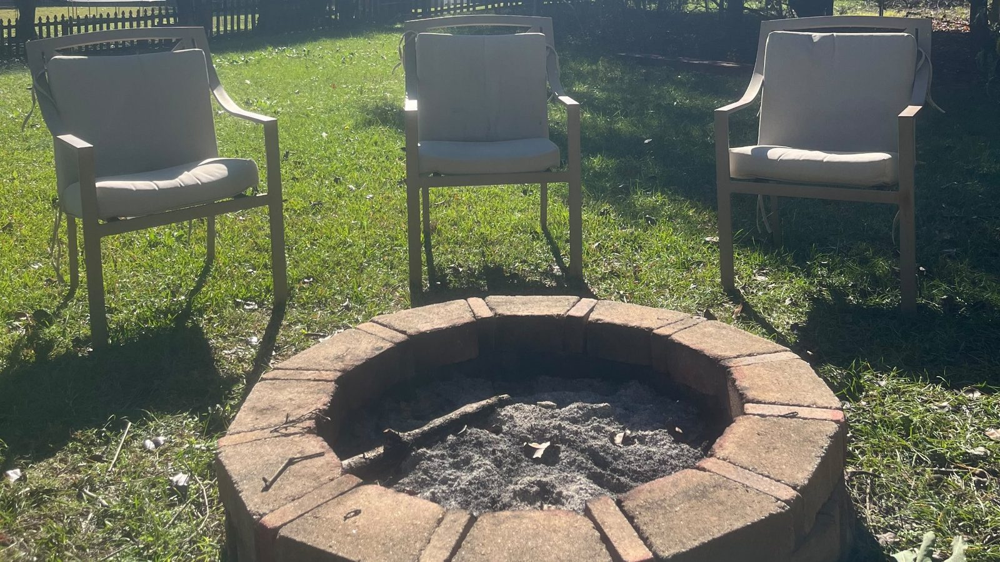

12 week private coaching
Reclaim
From anger and isolation to peace and brotherhood.
Coaching, guided breathwork and a short daily practice, built around a full-time job. Mine and yours.
- Who it's for
- You left the church, or left special operations, and lost the foundation with it: faith, marriage and community at once. You are holding it together at work and coming apart everywhere else.
- Included
- Twelve weekly sessions, one on one, 60 minutes each. Coaching through Slake, Wedge and Throw. A daily practice of breath, cold, sun and movement. Guided tracks, an Exchange Day Reset for the car before every exchange, and a one page practice sheet each week. Reviews at weeks 1, 6 and 12 against where you started.
- Where
- On Zoom, once a week, wherever you are.
- Guarantee
- Show up to the weekly call, do the daily practice and the homework, and by week 12 you will have a daily practice you run on your own, a calm response for your hardest moments, and brothers you can call. If you do the work and don't have all three, I keep coaching you free until you do.
Coaching, not therapy or medical care. Every client starts with a short call and an intake. If you are in crisis, call or text 988, and veterans press 1.